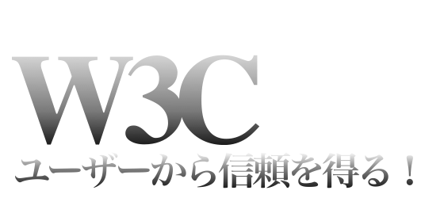

W3Cとは
W3CとはWorld Wide Web Consortiumの略語で、W3Cの目的は、WWWを長期的に成長させるためのプロトコルやガイドラインを開発することによって、WWWの能力を最大限に発揮するために作られた組織です。アメリカ合衆国マサチューセッツ工科大学計算機科学人工知能研究所(MIT CSAIL)、欧州19カ国の各代表研究機関で構成されるフランスに本部を置く欧州情報処理数学研究コンソーシアム(ERCIM)、および日本の慶應義塾大学がホスト期間として共同運営しています。コンソーシアムにより提供されるサービスには、開発者及び利用者の為のWorld Wide Webに関する豊富な情報、新技術を応用した様々なプロトタイプやサンプルアプリケーションの開発などが挙げられます。現在までに300を超える組織がコンソーシアムの会員として参加しており、日本からはこのうち約30組織が参加しています。またW3Cは、Webは、ハードウェア、ソフトウェア、ネットワーク、言語、文化、場所等の違いや、身体的、精神的能力にかかわらず、すべての人に提供されるべきものであるという命題を掲げ、ユニバーサルアクセスの実現に努めています。（引用：慶應義塾大学 SFC研究所 W3C）
Markup検証サービス（Markup Validation Service）
W3Cが提供しているマークアップ・バリデーション・サービス（Markup Validation Service）というものがあります。Validationの項目でも紹介しますが、このサービスはHTMLやXHTMLのようなMarkup言語をチェックするのに使うことができます。もし文法を間違っている場合、そのエラーを特定する事が出きます。さらに、Web文書を検証することで劇的にその品質を向上させ、W3Cの提供するガイドラインにある程度沿って作る事ができ、ユーザの信頼を得られます。
CSS検証サービス（CSS Validation Service）
W3Cが提供しているマークアップ・バリデーション・サービス（CSS Validation Service）というものがあります。W3C CSS検証サービスは、W3Cによって作られたフリーソフトウェアで、ウェブデザイナーやウェブ開発者が CSS (Cascading Style Sheets: カスケーディング・スタイルシート) をチェックするのに使うことができます。 このツールは、スタイルシートCSS仕様と比較するだけではなく、エラーやタイプミス、CSSの誤作動などを発見したりするのに役立ちます。